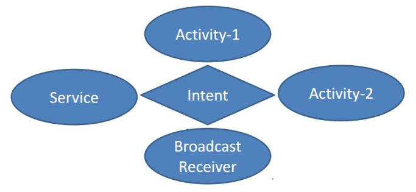
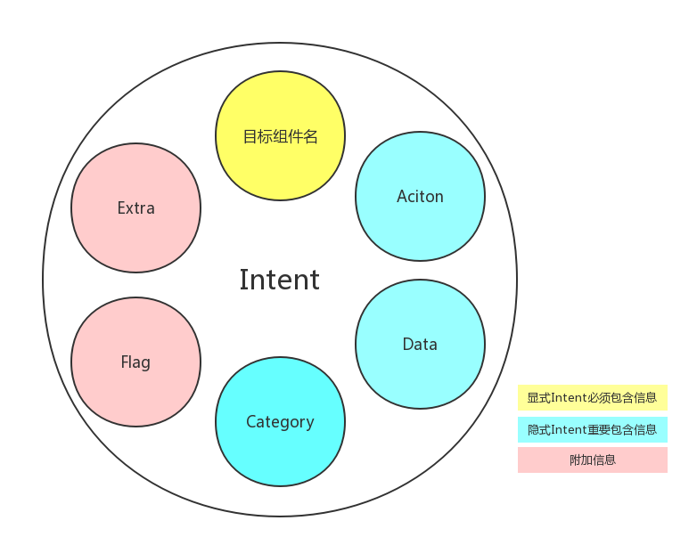
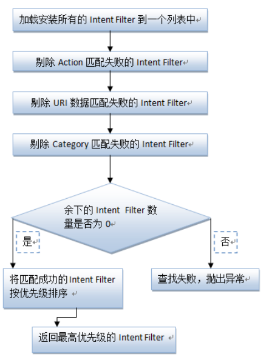
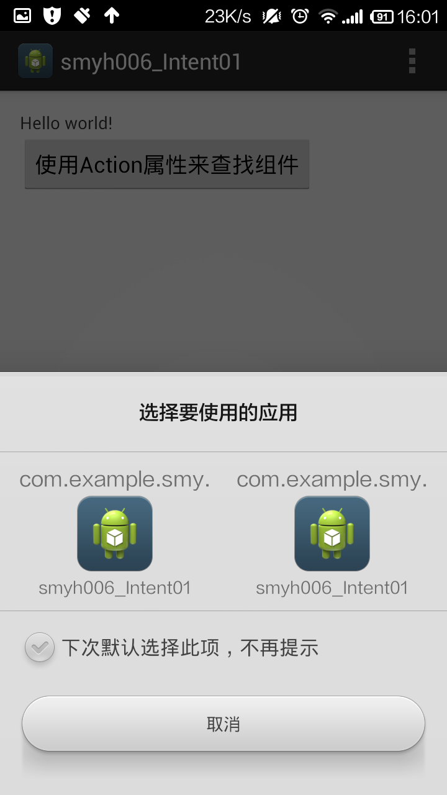
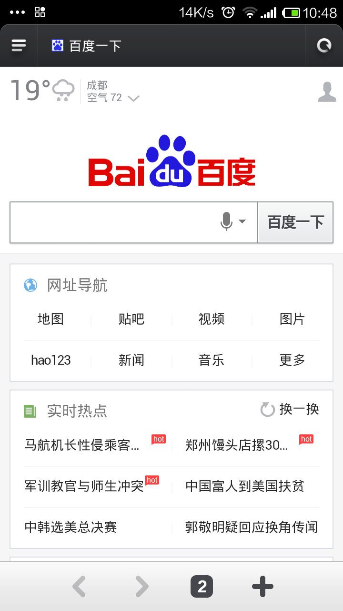
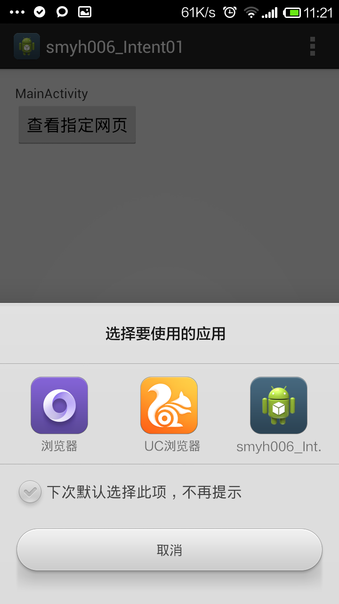
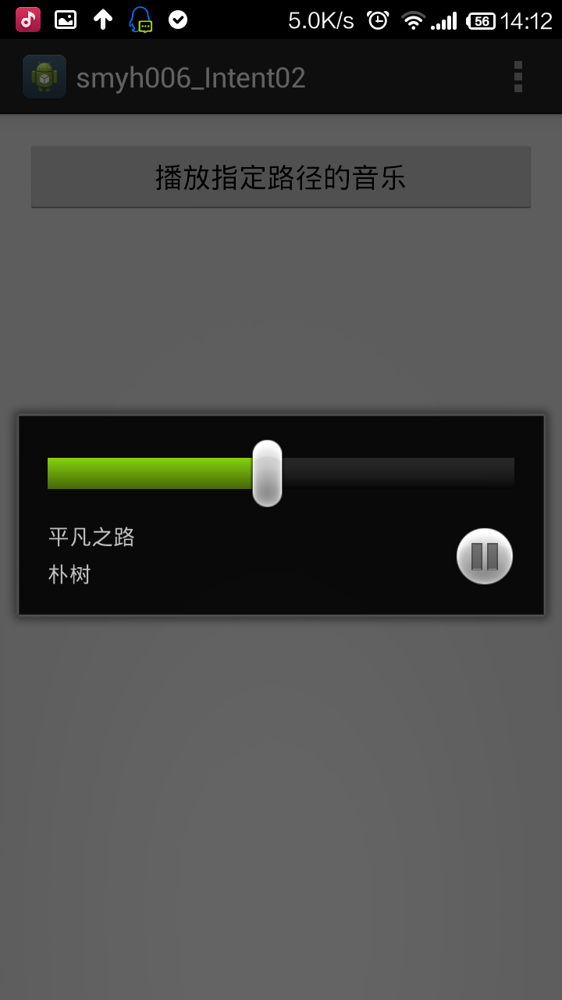
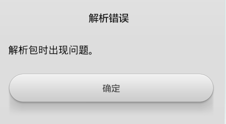
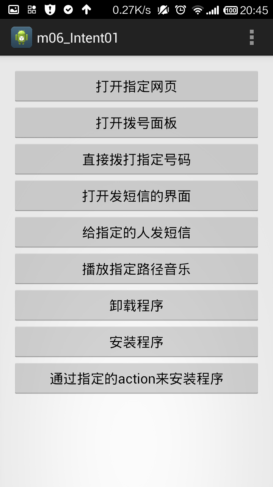

一.什么是intent
- Android中提供了Intent机制来协助应用间的交互与通讯，或者采用更准确的说法是，Intent不仅可用于应用程序之间，也可用于应用程序内部的activity, service和broadcast receiver之间的交互。Intent这个英语单词的本意是“目的、意向、意图”。
- Intent是一种运行时绑定（runtime binding)机制，它能在程序运行的过程中连接两个不同的组件。通过Intent，你的程序可以向Android表达某种请求或者意愿，Android会根据意愿的内容选择适当的组件来响应。
activity、service和broadcast receiver之间是通过Intent进行通信的，而另外一个组件Content Provider本身就是一种通信机制，不需要通过Intent。我们来看下面这个图就知道了：

如果Activity1需要和Activity2进行联系，二者不需要直接联系，而是通过Intent作为桥梁。通俗来讲，Intnet类似于中介、媒婆的角色。
- 使用Context.startActivity() 或 Activity.startActivityForResult()，传入一个intent来启动一个activity。使用 Activity.setResult()，传入一个intent来从activity中返回结果。
- 将intent对象传给Context.startService()来启动一个service或者传消息给一个运行的service。将intent对象传给 Context.bindService()来绑定一个service。
- 将intent对象传给 Context.sendBroadcast()，Context.sendOrderedBroadcast()，或者Context.sendStickyBroadcast()等广播方法，则它们被传给 broadcast receiver。
二.intent相关属性
Intent 作为一个负责组件间传递消息的信息对象，最重要的就是其包含的信息。实际上无论是显式还是隐式，Intent 发出的时候，系统对应的行为正是由 Intent 所包含信息的组合决定。一个 Intent 所包含的信息如下图：

- component(组件)：目的组件
- action（动作）：用来表现意图的行动
- category（类别）：用来表现动作的类别
- data（数据）：表示与动作要操纵的数据
- type（数据类型）：对于data范例的描写
- extras（扩展信息）：扩展信息
- Flags（标志位）：期望这个意图的运行模式
Intent类型分为显式Intent（直接类型）、隐式Intent（间接类型）。官方建议使用隐式Intent。上述属性中，component属性为直接类型，其他均为间接类型。
相比与显式Intent，隐式Intnet则含蓄了许多，它并不明确指出我们想要启动哪一个活动，而是指定一系列更为抽象的action和category等信息，然后交由系统去分析这个Intent，并帮我们找出合适的活动去启动。
Activity 中 Intent Filter 的匹配过程 ：

三.component(组件)：目的组件
Component属性明确指定Intent的目标组件的类名称。（属于直接Intent）
如果 component这个属性有指定的话，将直接使用它指定的组件。指定了这个属性以后，Intent的其它所有属性都是可选的。
例如，启动第二个Activity时，我们可以这样来写：
1 | button1.setOnClickListener(new OnClickListener() { |
如果写的简单一点，监听事件onClick()方法里可以这样写：1
2
3
4
5
6Intent intent = new Intent();
//setClass函数的第一个参数是一个Context对象
//Context是一个类，Activity是Context类的子类，也就是说，所有的Activity对象，都可以向上转型为Context对象
//setClass函数的第二个参数是一个Class对象，在当前场景下，应该传入需要被启动的Activity类的class对象
intent.setClass(MainActivity.this, SecondActivity.class);
startActivity(intent);
再简单一点，可以这样写：（当然，也是最常见的写法）
1 | Intent intent = new Intent(MainActivity.this,SecondActivity.class); |
四.Action（动作）：用来表现意图的行动
当日常生活中，描述一个意愿或愿望的时候，总是有一个动词在其中。比如：我想“做”三个俯卧撑；我要“写” 一封情书，等等。在Intent中，Action就是描述做、写等动作的，当你指明了一个Action，执行者就会依照这个动作的指示，接受相关输入，表现对应行为，产生符合的输出。在Intent类中，定义了一批量的动作，比如ACTION_VIEW，ACTION_PICK等， 基本涵盖了常用动作。加的动作越多，越精确。
Action 是一个用户定义的字符串，用于描述一个 Android 应用程序组件，一个 Intent Filter 可以包含多个 Action。在 AndroidManifest.xml 的Activity 定义时，可以在其
五.category（类别）：用来表现动作的类别
Category属性也是作为1
2
3
4
5
6
7
8
9<intent-filter>
<action android:name="com.vince.intent.MY_ACTION"></action>
<category android:name="com.vince.intent.MY_CATEGORY"></category>
<category android:name="android.intent.category.DEFAULT"></category>
</intent-filter>
Action 和category通常是放在一起用的，所以这里一起介绍一下。我们来先来举一个例子：
新建一个工程文件smyh006_Intent01，在默认文件的基础之上，新建文件SecondActicity.java和activity_second.xml。
紧接着，我们要到清单文件中进行注册，打开AndroidManifest.xml，添加SecondActivity的action和category的过滤器：
1 | <activity |
上方代码，表示SecondActicity可以匹配第4行的MY_ACTION这个动作，此时，如果在其他的Acticity通过这个action的条件来查找，那SecondActicity就具备了这个条件。类似于相亲时，我要求对方有哪些条件，然后对方这个SecondActicity恰巧满足了这个条件（够通俗了吧）。
注：如果没有指定的category，则必须使用默认的DEFAULT（即上方第5行代码）。
也就是说：只有
现在来修改MainActivity.java中按钮的点击事件，代码如下：
1 | button1.setOnClickListener(new OnClickListener() { |
上方代码中，也可以换成下面这种简洁的方式1
2
3
4
5
6
7
8button1.setOnClickListener(new OnClickListener() {
@Override
public void onClick(View v) {
//启动另一个Activity，（通过action属性进行查找）
Intent intent = new Intent("com.example.smyh006intent01.MY_ACTION");//方法： android.content.Intent.Intent(String action)
startActivity(intent);
}
});
上方第5行代码：在这个Intent中，我并没有指定具体哪一个Activity，我只是指定了一个action的常量。所以说，隐式Intent的作用就表现的淋漓尽致了。此时，点击MainActicity中的按钮，就会跳到SecondActicity中去。
上述情况只有SecondActicity匹配成功。如果有多个组件匹配成功，就会以对话框列表的方式让用户进行选择。我们来详细介绍一下：
我们新建文件ThirdActicity.java和activity_third.xml，然后在清单文件AndroidManifest.xml中添加ThirdActivity的action和category的过滤器：
1 | <activity |
此时，运行程序，当点击MainActivity中的按钮时，弹出如下界面：

相信大家看到了这个界面，应该就一目了然了。于是我们可以做出如下总结：
在自定义动作时，使用activity组件时，必须添加一个默认的类别
具体的实现为：1
2
3
4<intent-filter>
<action android:name="com.example.action.MY_ACTION"/>
<category android:name="android.intent.category.DEFAULT"/>
</intent-filter>
如果有多个组件被匹配成功，就会以对话框列表的方式让用户进行选择。
每个Intent中只能指定一个action，但却能指定多个category；类别越多，动作越具体，意图越明确（类似于相亲时，给对方提了很多要求）。
目前我们的Intent中只有一个默认的category，现在可以通过intent.addCategory()方法来实现。修改MainActivity中按钮的点击事件，代码如下：
1 | button1.setOnClickListener(new OnClickListener() { |
既然在Intent中增加了一个category，那么我们要在清单文件中去声明这个category，不然程序将无法运行。代码如下：
1 | android:name=".SecondActivity"> |
此时，点击MainActicity中的按钮，就会跳到SecondActicity中去。
总结如下：
自定义类别： 在Intent添加类别可以添加多个类别，那就要求被匹配的组件必须同时满足这多个类别，才能匹配成功。操作Activity的时候，如果没有类别，须加上默认类别
六.data（数据）：表示与动作要操纵的数据
- Data属性是Android要访问的数据，和action和Category声明方式相同，也是在
中。 - 多个组件匹配成功显示优先级高的； 相同显示列表。
Data是用一个uri对象来表示的，uri代表数据的地址，属于一种标识符。通常情况下，我们使用action+data属性的组合来描述一个意图：做什么
使用隐式Intent，我们不仅可以启动自己程序内的活动，还可以启动其他程序的活动，这使得Android多个应用程序之间的功能共享成为了可能。比如应用程序中需要展示一个网页，没有必要自己去实现一个浏览器（事实上也不太可能），而是只需要条用系统的浏览器来打开这个网页就行了。
【实例】打开指定网页：
MainActivity.java中，监听器部分的核心代码如下：1
2
3
4
5
6
7
8
9
10button1.setOnClickListener(new OnClickListener() {
@Override
public void onClick(View v) {
Intent intent = new Intent();
intent.setAction(Intent.ACTION_VIEW);
Uri data = Uri.parse("http://www.baidu.com");
intent.setData(data);
startActivity(intent);
}
});
当然，上方代码也可以简写成：1
2
3
4
5
6
7
8button1.setOnClickListener(new OnClickListener() {
@Override
public void onClick(View v) {
Intent intent = new Intent(Intent.ACTION_VIEW);
intent.setData(Uri.parse("http://www.baidu.com"));
startActivity(intent);
}
});
第4行代码：指定了Intent的action是 Intent.ACTION_VIEW，表示查看的意思，这是一个Android系统内置的动作；
第5行代码：通过Uri.parse()方法，将一个网址字符串解析成一个Uri对象，再调用intent的setData()方法将这个Uri对象传递进去。
当点击按钮时，将跳到如下界面：

此时， 调用的是系统默认的浏览器，也就是说，只调用了这一个组件。现在如果有多个组件得到了匹配，应该是什么情况呢？
我们修改修改清单文件中对SecondAcivity的声明：1
2
3
4
5
6
7
8<activity
android:name=".SecondActivity">
<intent-filter>
<action android:name="android.intent.action.VIEW" />
<category android:name="android.intent.category.DEFAULT" />
<data android:scheme="http" android:host="www.baidu.com"/>
</intent-filter>
</activity>
现在，SecondActivity也匹配成功了，我们运行程序，点击MainActicity的按钮时，弹出如下界面供我们选择：

我们可以总结如下：
- 当Intent匹配成功的组件有多个时，显示优先级高的组件，如果优先级相同，显示列表让用户自己选择
- 优先级从-1000至1000，并且其中一个必须为负的才有效
注：系统默认的浏览器并没有做出优先级声明，其优先级默认为正数。
优先级的配置如下：
在清单文件中修改对SecondAcivity的声明，即增加一行代码，通过来android:priority设置优先级，如下：1
2
3
4
5
6
7
8<activity
android:name=".SecondActivity">
<intent-filter android:priority="-1">
<action android:name="android.intent.action.VIEW" />
<category android:name="android.intent.category.DEFAULT" />
<data android:scheme="http" android:host="www.baidu.com"/>
</intent-filter>
</activity>
注：
Data属性的声明中要指定访问数据的Uri和MIME类型。可以在元素中通过一些属性来设置：
android:scheme、android:path、android:port、android:mimeType、android:host等，通过这些属性来对应一个典型的Uri格式scheme://host:port/path。例如：http://www.google.com。
七.type（数据类型）：对于data范例的描写
如果Intent对象中既包含Uri又包含Type，那么，在
Type属性用于明确指定Data属性的数据类型或MIME类型，但是通常来说，当Intent不指定Data属性时，Type属性才会起作用，否则Android系统将会根据Data属性值来分析数据的类型，所以无需指定Type属性。
data和type属性一般只需要一个，通过setData方法会把type属性设置为null，相反设置setType方法会把data设置为null，如果想要两个属性同时设置，要使用Intent.setDataAndType()方法。
【任务】：data+type属性的使用
【实例】：播放指定路径的mp3文件。
具体如下：
新建工程文件smyh006_Intent02，MainActivity.java中按钮监听事件部分的代码如下：
1 | button.setOnClickListener(new OnClickListener(){ |
代码解释：
第6行：”file://“表示查找文件，后面再加上我的小米手机存储卡的路径：/storage/sdcard0，再加上具体歌曲的路径。
第8行：设置data+type属性
运行后，当点击按钮时，效果如下：

八.extras（扩展信息）：扩展信息
是其它所有附加信息的集合。使用extras可以为组件提供扩展信息，比如，如果要执行“发送电子邮件”这个
动作，可以将电子邮件的标题、正文等保存在extras里，传给电子邮件发送组件。
九.Flags（标志位）：期望这个意图的运行模式
一个程序启动后系统会为这个程序分配一个task供其使用，另外同一个task里面可以拥有不同应用程序的activity。那么，同一个程序能不能拥有多个task？这就涉及到加载activity的启动模式，这个需要单独讲一下。
注：android中一组逻辑上在一起的activity被叫做task，自己认为可以理解成一个activity堆栈。
十.Activity的启动模式：
其实我们不在清单文件中设置，只在代码中通过flag来设置也是可以的，如下：
1 | Intent intent = new Intent(MainActivity.this,SecondActivity.class); |
1 | Intent intent = new Intent(MainActivity.this,SecondActivity.class); |
十一.Intent的常见应用：
打开指定网页：（直接复制的上面的代码）
MainActivity.java中，监听器部分的核心代码如下：1
2
3
4
5
6
7
8
9
10button1.setOnClickListener(new OnClickListener() {
@Override
public void onClick(View v) {
Intent intent = new Intent();
intent.setAction(Intent.ACTION_VIEW);//方法：android.content.Intent.Intent(String action)
Uri data = Uri.parse("http://www.baidu.com");
intent.setData(data);
startActivity(intent);
}
});当然，上方代码也可以简写成：
1
2
3
4
5
6
7
8button1.setOnClickListener(new OnClickListener() {
@Override
public void onClick(View v) {
Intent intent = new Intent(Intent.ACTION_VIEW);
intent.setData(Uri.parse("http://www.baidu.com"));
startActivity(intent);
}
});第4行代码：指定了Intent的action是 Intent.ACTION_VIEW，表示查看的意思，这是一个Android系统内置的动作；
第5行代码：通过Uri.parse()方法，将一个网址字符串解析成一个Uri对象，再调用intent的setData()方法将这个Uri对象传递进去。
或者可以写成：1
2
3
4
5
6
7
8button1.setOnClickListener(new OnClickListener() {
@Override
public void onClick(View v) {
Uri uri = Uri.parse("http://www.baidu.com");
Intent intent = new Intent(Intent.ACTION_VIEW,uri);//方法： android.content.Intent.Intent(String action, Uri uri)
startActivity(intent);
}
});电话：
- 【方式一】打开拨打电话的界面：运行程序后，点击按钮，显示如下界面：
1
2
3Intent intent = new Intent(Intent.ACTION_DIAL);
intent.setData(Uri.parse("tel:10086"));
startActivity(intent); - 【方式二】直接拨打电话：要使用这个功能必须在配置文件中加入权限：（加一行代码）
1
2
3Intent intent = new Intent(Intent.ACTION_CALL);
intent.setData(Uri.parse("tel:10086"));
startActivity(intent);1
2
3
4<uses-sdk
android:minSdkVersion="8"
android:targetSdkVersion="16" />
<uses-permission android:name="android.permission.CALL_PHONE"/>
- 【方式一】打开拨打电话的界面：
发送短信：
【方式一】打开发送短信的界面：action+type1
2
3
4Intent intent = new Intent(Intent.ACTION_VIEW);
intent.setType("vnd.android-dir/mms-sms");
intent.putExtra("sms_body", "具体短信内容"); //"sms_body"为固定内容
startActivity(intent);【方式二】打开发短信的界面(同时指定电话号码)：action+data
1
2
3
4Intent intent = new Intent(Intent.ACTION_SENDTO);
intent.setData(Uri.parse("smsto:18780260012"));
intent.putExtra("sms_body", "具体短信内容"); //"sms_body"为固定内容
startActivity(intent);播放指定路径音乐：action+data+type
1
2
3
4Intent intent = new Intent(Intent.ACTION_VIEW);
Uri uri = Uri.parse("file:///storage/sdcard0/平凡之路.mp3"); ////路径也可以写成："/storage/sdcard0/平凡之路.mp3"
intent.setDataAndType(uri, "audio/mp3"); //方法：Intent android.content.Intent.setDataAndType(Uri data, String type)
startActivity(intent);卸载程序：action+data（例如点击按钮，卸载某个应用程序，根据包名来识别）
注：无论是安装还是卸载，应用程序是根据包名package来识别的。1
2
3
4Intent intent = new Intent(Intent.ACTION_DELETE);
Uri data = Uri.parse("package:com.example.smyh006intent01");
intent.setData(data);
startActivity(intent);安装程序：action+data+type
1
2
3
4Intent intent = new Intent(Intent.ACTION_VIEW);
Uri data = Uri.fromFile(new File("/storage/sdcard0/AndroidTest/smyh006_Intent01.apk")); //路径不能写成："file:///storage/sdcard0/···"
intent.setDataAndType(data, "application/vnd.android.package-archive"); //Type的字符串为固定内容
startActivity(intent);注：第2行的路径不能写成：”file:///storage/sdcard0/···”，不然报错如下：

疑问：通过下面的这种方式安装程序，运行时为什么会出错呢？1
2
3
4
5
6
7//通过指定的action来安装程序
public void installClickTwo(View view){
Intent intent = new Intent(Intent.ACTION_PACKAGE_ADDED);
Uri data = Uri.fromFile(new File("/storage/sdcard0/AndroidTest/smyh006_Intent01.apk")); //路径不能写成："file:///storage/sdcard0/···"
intent.setData(data);
startActivity(intent);
}
总结代码1
2
3
4
5
6
7
8
9
10
11
12
13
14
15
16
17
18
19
20
21
22
23
24
25
26
27
28
29
30
31
32
33
34
35
36
37
38
39
40
41
42
43
44
45
46
47
48
49
50
51
52
53
54
55
56
57
58
59
60
61
62
63
64
65
66
67
68
69
70
71
72
73
74
75
76
77
78
79
80
81
82
83
84
85package com.example.m06intent01;
import java.io.File;
import android.app.Activity;
import android.content.Intent;
import android.net.Uri;
import android.os.Bundle;
import android.view.Menu;
import android.view.View;
public class MainActivity extends Activity {
@Override
protected void onCreate(Bundle savedInstanceState) {
super.onCreate(savedInstanceState);
setContentView(R.layout.activity_main);
}
//打开指定网页
public void browsePageClick(View view){
Intent intent = new Intent(Intent.ACTION_VIEW);
intent.setData(Uri.parse("http://www.baidu.com/"));
startActivity(intent);
}
//打开拨号面板
public void openDialPageClick(View view){
Intent intent = new Intent(Intent.ACTION_DIAL);
intent.setData(Uri.parse("tel:10086"));
startActivity(intent);
}
//直接拨打指定号码
public void dialPhoneClick(View view){
Intent intent = new Intent(Intent.ACTION_CALL);
intent.setData(Uri.parse("tel:10086"));
startActivity(intent);
}
//打开发短信的界面:action+type
public void openMsgPageClick(View view){
Intent intent = new Intent(Intent.ACTION_VIEW);
intent.setType("vnd.android-dir/mms-sms");
intent.putExtra("sms_body", "具体短信内容"); //"sms_body"为固定内容
startActivity(intent);
}
//打开发短信的界面(指定电话号码):action+data
public void sendMsgClick(View view){
Intent intent = new Intent(Intent.ACTION_SENDTO);
intent.setData(Uri.parse("smsto:18780260012"));
intent.putExtra("sms_body", "具体短信内容"); //"sms_body"为固定内容
startActivity(intent);
}
//播放指定路径音乐
public void playMusicClick(View view){
Intent intent = new Intent(Intent.ACTION_VIEW);
Uri uri = Uri.parse("file:///storage/sdcard0/平凡之路.mp3"); //路径也可以写成："/storage/sdcard0/平凡之路.mp3"
intent.setDataAndType(uri, "audio/mp3"); //方法：Intent android.content.Intent.setDataAndType(Uri data, String type)
startActivity(intent);
}
//卸载某个应用程序，根据包名来识别
public void uninstallClick(View view){
Intent intent = new Intent(Intent.ACTION_DELETE);
Uri data = Uri.parse("package:com.example.smyh006intent01");
intent.setData(data);
startActivity(intent);
}
//安装某个应用程序，根据apk的文件名来识别
public void installClick(View view){
Intent intent = new Intent(Intent.ACTION_VIEW);
Uri data = Uri.fromFile(new File("/storage/sdcard0/AndroidTest/smyh006_Intent01.apk")); //路径不能写成："file:///storage/sdcard0/···"
intent.setDataAndType(data, "application/vnd.android.package-archive"); //Type的字符串为固定内容
startActivity(intent);
}
@Override
public boolean onCreateOptionsMenu(Menu menu) {
// Inflate the menu; this adds items to the action bar if it is present.
getMenuInflater().inflate(R.menu.main, menu);
return true;
}
}


...
...
听首歌放松一下！